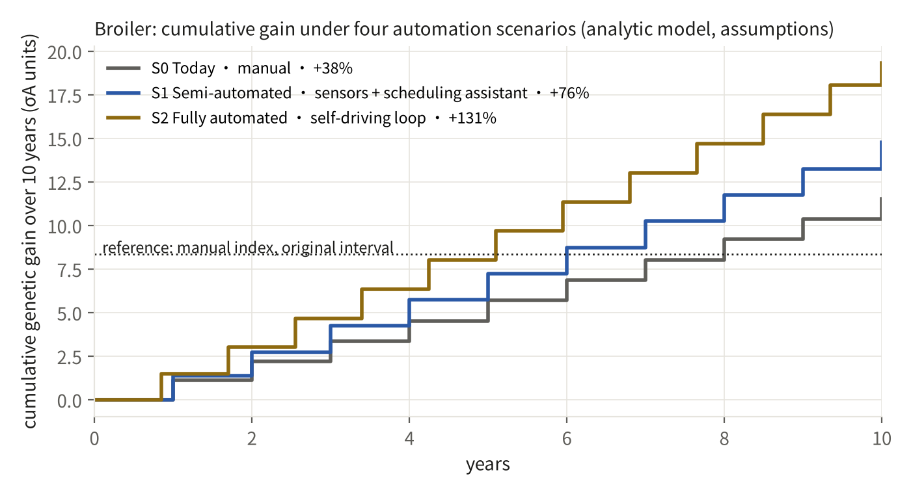
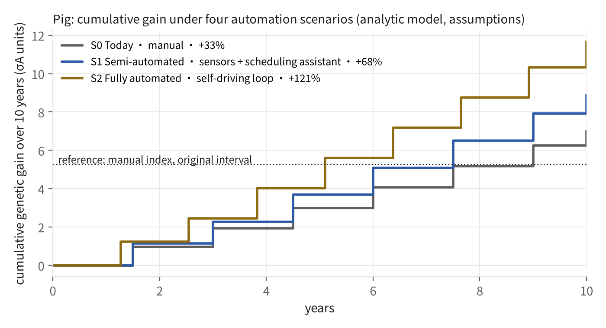
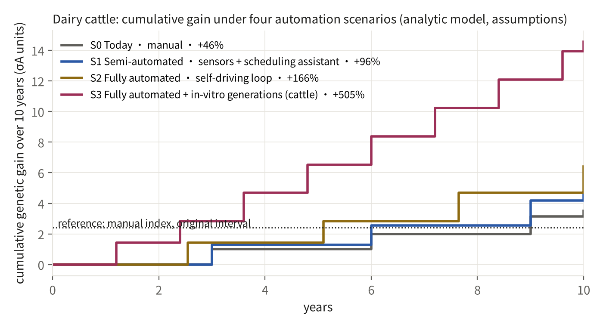
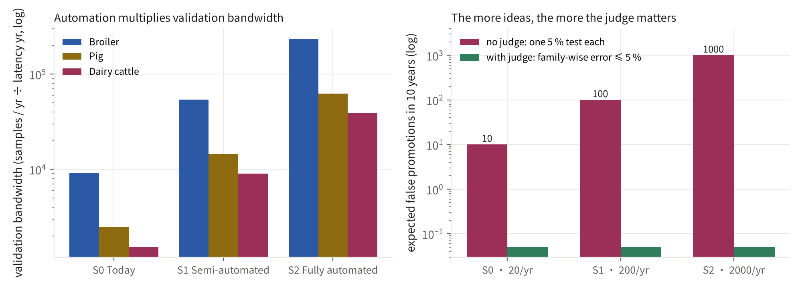

Question: if the wet lab — genotyping, phenotyping, reproduction — were automated too, how much faster would the breeding loop run? The answer comes from the breeder's equation and validation bandwidth, not adjectives. Generated 2026-09-28 15:11 UTC. Every parameter is an assumption (THEORY.en.md), not a forecast for any customer.
| Scenario | What it is |
|---|---|
| S0 Today · manual | Advice travels by e-mail and spreadsheets and 40 % is executed; 60 % of animals return phenotypes; labels arrive slower than a generation; twenty new ideas a year are judged by people. |
| S1 Semi-automated · sensors + scheduling assistant | Automatic weighing and feed-intake capture cover nearly every animal; matings are scheduled by the system and confirmed by people, 80 % executed; the hypothesis factory yields two hundred ideas a year. |
| S2 Fully automated · self-driving loop | Advice flows straight into the reproduction system; genotyping at hatch brings selection forward and shortens the generation interval by 15 %; label latency is the biological minimum; two thousand ideas a year all pass through the judge. |
| S3 Fully automated + in-vitro generations (cattle) | S2 plus in-vitro fertilisation and embryo genotyping: the dairy generation interval falls from 3 to 1.2 years. Grounded for cattle only; chickens and pigs have no mature in-vitro generation technology. |



| Species | Scenario | Compliance | Phenotype coverage | Label latency (yr) | Generation interval (yr) | Samples / yr | Generations in 10 yr | Final accuracy r | 10-yr cumulative gain (σA) | vs today | Validation bandwidth | False promotions in 10 yr: no judge / judge |
|---|---|---|---|---|---|---|---|---|---|---|---|---|
| Broiler | S0 Today · manual | 40% | 60% | 1.30 | 1.00 | 20,000 | 10 | 0.90 | 11.53 | +38% | 9,231 | 10 / 0.05 |
| Broiler | S1 Semi-automated · sensors + scheduling assistant | 80% | 95% | 1.05 | 1.00 | 60,000 | 10 | 0.90 | 14.76 | +76% | 54,286 | 100 / 0.05 |
| Broiler | S2 Fully automated · self-driving loop | 100% | 100% | 0.85 | 0.85 | 200,000 | 12 | 0.90 | 19.32 | +131% | 235,294 | 1000 / 0.05 |
| Pig | S0 Today · manual | 40% | 60% | 1.95 | 1.50 | 8,000 | 7 | 0.89 | 6.99 | +33% | 2,462 | 10 / 0.05 |
| Pig | S1 Semi-automated · sensors + scheduling assistant | 80% | 95% | 1.58 | 1.50 | 24,000 | 7 | 0.90 | 8.87 | +68% | 14,476 | 100 / 0.05 |
| Pig | S2 Fully automated · self-driving loop | 100% | 100% | 1.27 | 1.27 | 80,000 | 8 | 0.90 | 11.66 | +121% | 62,745 | 1000 / 0.05 |
| Dairy cattle | S0 Today · manual | 40% | 60% | 3.90 | 3.00 | 10,000 | 4 | 0.87 | 3.52 | +46% | 1,538 | 10 / 0.05 |
| Dairy cattle | S1 Semi-automated · sensors + scheduling assistant | 80% | 95% | 3.15 | 3.00 | 30,000 | 4 | 0.89 | 4.71 | +96% | 9,048 | 100 / 0.05 |
| Dairy cattle | S2 Fully automated · self-driving loop | 100% | 100% | 2.55 | 2.55 | 100,000 | 4 | 0.90 | 6.40 | +166% | 39,216 | 1000 / 0.05 |
| Dairy cattle | S3 Fully automated + in-vitro generations (cattle) | 100% | 100% | 1.20 | 1.20 | 100,000 | 9 | 0.90 | 14.56 | +505% | 83,333 | 1000 / 0.05 |
The cheaper ideas get, the more candidates enter the judge each year. With one 5 % significance test per candidate, the broiler S2 scenario would let 1000 false positives into breeding plans over ten years; with the judge's correction for the number of attempts the family-wise error stays below 5% — the mechanism behind Demo 1's zero promoted negative controls. Automation multiplies validation bandwidth (S0 9,231 → S2 235,294); the judge decides whether that bandwidth becomes conclusions or noise.

See CLAIMS.en.md.
CLAIMS.en.md and RUN.json are generated by this script; the interactive widget on the showcase site implements the same model line for line (make verify checks it with node).